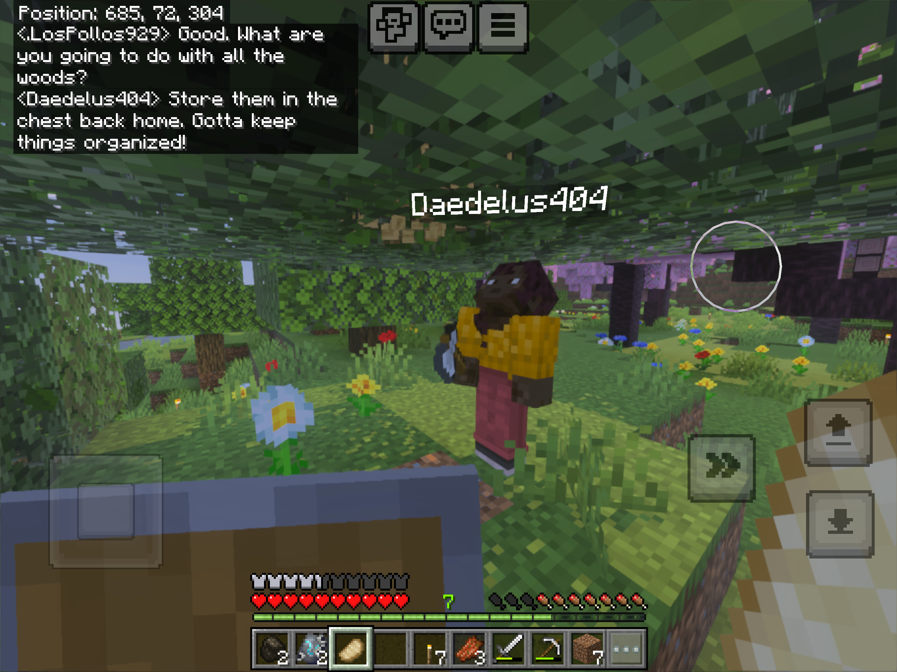
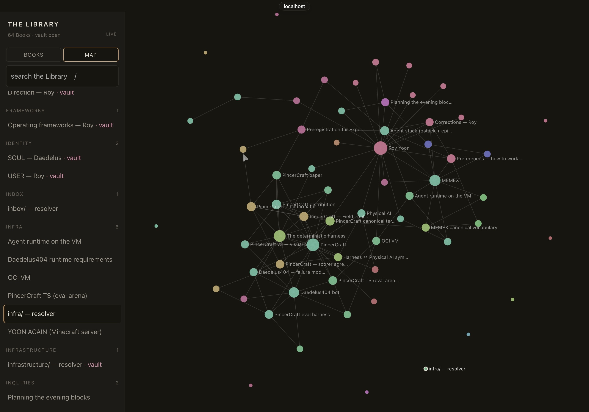

TTNK / Jarada · Product design & development
I contributed to the design and development of a wearable device for posture feedback. The team received an award in the 2026 Republic of Korea Air Force startup competition.
I am an undergraduate in Mechanical Engineering at Yonsei University. I am particularly interested in bringing AI agents into the real world through robotics. I aim to study how reinforcement learning can enable robots to acquire skills and operate autonomously in complex, open-ended environments.
Through independent projects, I have explored agent planning and evaluation in PincerCraft and memory sharing across agents in Memex. These experiences motivate my interest in learning how to formulate research questions and evaluate methods systematically. I am seeking an undergraduate research internship in robot learning.
My long-term vision is to contribute to autonomous systems that reduce people’s dependence on labor. I also care about how these technologies are used and how their benefits are shared.

Planning and execution of LLM agents in Minecraft
I began this project during military service, using Minecraft as an accessible environment for exploring autonomous behavior. Building on Mindcraft, I implemented multistep planning, state feedback, action checks, and task-completion verification using existing language models and action functions.
In an evaluation on 13 Minecraft tasks with the same language model, false completion—claiming completion without meeting task criteria—occurred in 2 of 52 attempts with the full harness and 23 of 51 with its experimental components removed. Failures on longer tasks prompted my interest in progress monitoring and recovery during execution.

Shared memory and associative trails for AI agents
I developed Memex after finding that useful context was fragmented across the separate memory systems of the agents I used. Inspired by Vannevar Bush’s As We May Think, it stores records in a shared library and connects them through associative trails that document the development of ideas and decisions.
I have used the system across my projects for several months. This experience has led me to consider how knowledge acquired by one agent might support another agent’s work.
I contributed to the design and development of a wearable device for posture feedback. The team received an award in the 2026 Republic of Korea Air Force startup competition.
I participate in ATClink through the Social Engagement Fund (SEF), a program organized by Yonsei University’s Institute for Global Engagement and Empowerment (IGEE). Our team investigates ways to link medication information across Korea, Vietnam, Nepal, and Uzbekistan.
Undergraduate, Mechanical Engineering · Currently on leave for military service
UC Berkeley CS285: Deep Reinforcement Learning — Independent study. Completed the course and all homework assignments using the publicly available 2023 lectures and course materials. Worked through reinforcement-learning implementations within the provided homework codebases.
Paper reading: Studied SkiMo, DreamSmooth, HumanoidBench, and other papers from the Scalable Robot Learning Lab’s recommended reading list.
Python / PyTorch: Foundational experience through CS285 assignments; able to read and understand the structure of the course’s reinforcement-learning code and training workflows.
English: TOEIC 950/990 (August 2023). Comfortable reading and interpreting research papers in English without translation.